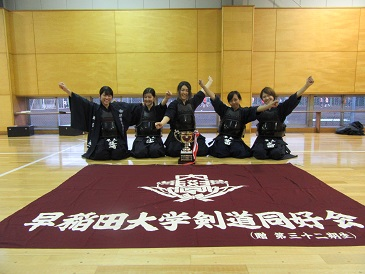

|
10月30日に行われた後期早慶戦の様子を引き続きお伝えします。 試合再開です。男子二軍戦からスタート！ じゃ〇け〇で決めた先鋒の三上が先取。てかブレブレ。死。 大竹（５４）のこの小手は一本でもよいと思った（個人的意見） 試合前「みんなも人間だから…」という謎の言葉をかけていた↓ 坂本村長（５３）は初太刀に小手をとられ苦しい展開に…。ジーザス。 試合後の村長の様子です、お納めください。 そしていよいよ一軍戦。まずは女子！ オラオラ上本の逆胴炸裂。最近はもはや機械のような完璧な打ち。 第三副将もとられてからの見事な逆転勝ちでした！ これで女子には久々にトロフィーが戻ってきました！ こうなると男子も負けてはいられません。 
しかし慶應の先鋒は強かった… あんまり使いたくなかったけど一応。すいません。 白熱した試合展開になりましたが… 一歩及ばず準優勝に終わりました。でもナイスファイト！ 一軍が戦ってたっていうのに、こいつといったら… ってことでこの後は合同稽古に。「はーい がんばりまーす。」 一度に全員は無理なのでグループ別で行いました。 もう動画で試合を復習している鈴木（５４）…。偉すぎかよ。 気づいたら慶應の先生に勝手に履かれていたという水谷のビーサン。 やっと野崎（５４）のショットが…。小手、修理しような。 なんか、青春って感じ（遠い目） 炒飯ガール武田（５４）。最近はそうでもないのかな。 見るからにテンションのおかしそうな女子代表。 
稽古お疲れ様でした！（写真とコメントは関係ありません。） 表彰の様子です。女子はおめでとう！ 
男子優秀選手賞は太田（５３）が受賞…。はぁ……。 女子最優秀選手賞は大石（５５）が受賞！ 全体で記念撮影。  そして集合写真です。まずは女子三軍から。 女子二軍。 女子一軍。いいなあトロフィー。 男子三軍。 男子二軍。 男子一軍。これはこれでなんかいい写真だよね。 続いて５５期。「４」の字だそうです。 ５４期。流行の恋ダンスですねぇぇ。イケてるねぇぇ。 ５３期。なんでこうなったのかよくわかりませんが。 最後に全体です。お疲れ様でした。 以上で後期早慶戦は終了です。１３日の二季杯も頑張っていきましょう！ (※写真へのコメントは全て管理人がしております。) |